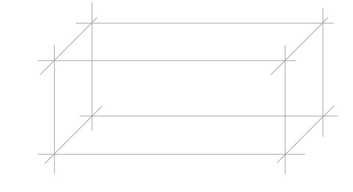
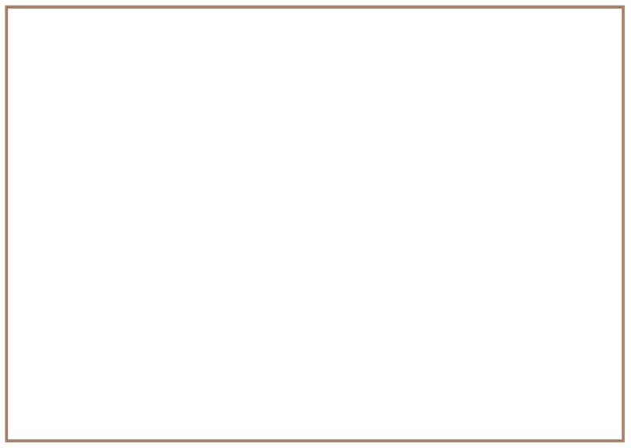
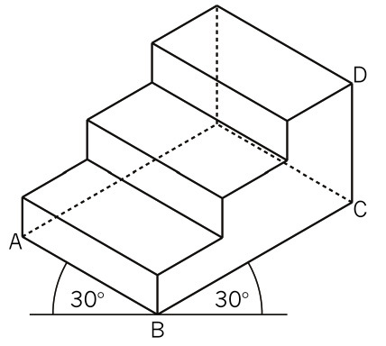
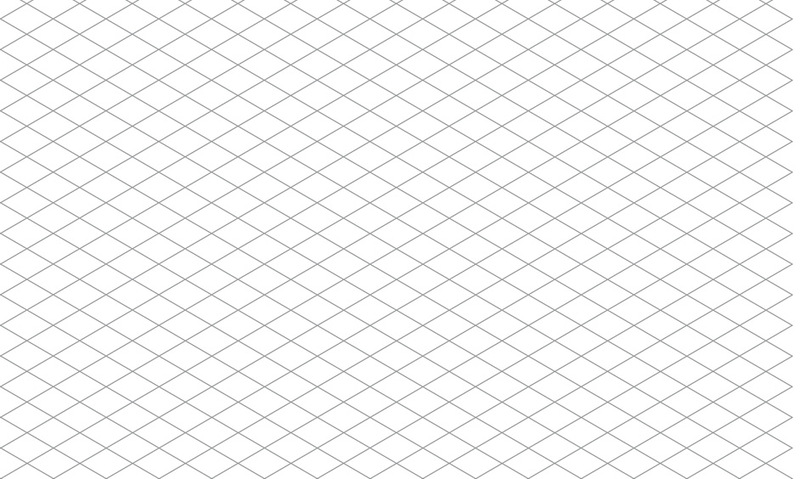

<div class="container">
  <div id="contents" class="col-md-12 main-content"><h1 xmlns="http://www.w3.org/1999/xhtml" id="toc-id-9">Plat en isometriese werkstekeninge</h1>


 

<figcaption xmlns="http://www.w3.org/1999/xhtml">Figuur 1
</figcaption> 

<figcaption xmlns="http://www.w3.org/1999/xhtml">Figuur 2
</figcaption><figcaption xmlns="http://www.w3.org/1999/xhtml">Figuur  3
</figcaption><figcaption xmlns="http://www.w3.org/1999/xhtml">Figuur 4</figcaption><li xmlns="http://www.w3.org/1999/xhtml">
<p class="x--Body-investigation-hanging"> Hierdie lyne staan ook bekend as
soliede lyne. Hulle is effens dikker en
donkerder as konstruksielyne.
</p>
</li>
 

<figcaption xmlns="http://www.w3.org/1999/xhtml">Figuur 5</figcaption> 


<figcaption xmlns="http://www.w3.org/1999/xhtml">Figuur 6</figcaption><b xmlns="http://www.w3.org/1999/xhtml">streepstippellyne
</b> genoem. 

<figcaption xmlns="http://www.w3.org/1999/xhtml">Figuur 7</figcaption><figcaption xmlns="http://www.w3.org/1999/xhtml">Figuur 8</figcaption><b xmlns="http://www.w3.org/1999/xhtml">skaal</b> te kan teken. Maar
hoe werk
dit?
<li xmlns="http://www.w3.org/1999/xhtml" class="x--Body-text-bullet">
<span class="char-style-override-11"/>
<b>Skaal 1:1</b> Dit is volskaal, en beteken een sentimeter in jou tekening wys een
sentimeter in die werklike lewe.
</li>

<li xmlns="http://www.w3.org/1999/xhtml" class="x--Body-text-bullet">
<span class="char-style-override-11"/>
<b>Skaal
1:2</b> Dit beteken dat ’n sentimeter in jou tekening twee sentimeter in die
werklike lewe aandui.
</li>
 

<figcaption xmlns="http://www.w3.org/1999/xhtml">Figuur 9</figcaption><figcaption xmlns="http://www.w3.org/1999/xhtml">Figuur 10</figcaption><li xmlns="http://www.w3.org/1999/xhtml" class="x--Body-investigation-hanging para-style-override-36">Teken die voorwerp
volgens ’n skaal van 1:5 oor. Gebruik ’n liniaal om hierdie
tekening, en al die ander tekeninge in hierdie hoofstuk, te maak. Gebruik ’n
passer om die sirkel te teken.
<ul><li class="x--Body-text-bullet para-style-override-54">
<span class="char-style-override-11"/> Wys afmetings.
</li>

<li class="x--Body-text-bullet para-style-override-54">
<span class="char-style-override-11"/> Wys die sirkel se hartlyne.
</li>

<li class="x--Body-text-bullet para-style-override-55">
<span class="char-style-override-11"/> Wys die skaal.
</li>
</ul></li>
<li xmlns="http://www.w3.org/1999/xhtml" class="x--Body-investigation-hanging--1-3- para-style-override-56">Die dame sien
net die rooi
gedeelte van die blok. Maak ’n
skets van die rooi gedeelte op die
geruite blok hieronder.

<figure><figcaption>Figuur 11</figcaption></figure><p/>

<p class="x--Title-Chapter-Number para-style-override-3" xml:lang="en-GB">
<span>
</span> </p>

<p/>
</li>
<li xmlns="http://www.w3.org/1999/xhtml" class="x--Body-investigation-hanging">Maak ’n 1:10 skaaltekening van die
voorkant van hierdie voorwerp.

<ul><li class="x--Body-text-bullet para-style-override-54">
<span class="char-style-override-11"/>Wys weggesteekte lyne.
</li>

<li class="x--Body-text-bullet para-style-override-54">
<span class="char-style-override-11"/> Wys afmetings.
</li>

<li class="x--Body-text-bullet para-style-override-54">
<span class="char-style-override-11"/> Wys die skaal.
</li>
</ul></li>

 
<figcaption xmlns="http://www.w3.org/1999/xhtml">
Figuur 12
</figcaption><figcaption xmlns="http://www.w3.org/1999/xhtml">Figuur 13: Skuinsaansig
</figcaption> 

<figcaption xmlns="http://www.w3.org/1999/xhtml">Figuur 14: Isometriese tekening
</figcaption><div xmlns="http://www.w3.org/1999/xhtml" class="frame-7">
<p class="x--Body-box-no-indent">Die woord “isometries” is
afgelei van die woorde “iso”
en “metries”. “Iso” beteken
“dieselfde” en “metries” verwys
na “afmetings”.
</p>
</div>
<li xmlns="http://www.w3.org/1999/xhtml" class="x--Body-investigation-hanging para-style-override-38">Maak ’n isometriese
tekening van die
krytdosie hier regs
op die isometriese
geruite blok. Gebruik
’n skaal van 1:2

<ul><li class="x--Body-text-bullet para-style-override-54">
<span class="char-style-override-11"/> Wys versteekte lyne.
</li>

<li class="x--Body-text-bullet para-style-override-54">
<span class="char-style-override-11"/>Wys afmetings.
</li>

<li class="x--Body-text-bullet para-style-override-54">
<span class="char-style-override-11"/> Wys die skaal.
</li>
</ul><figure><figcaption>Figuur 15</figcaption></figure><p class="x--Title-Chapter-Number para-style-override-3" xml:lang="en-GB">
<span>
</span> </p>

<p/>
</li>

<li xmlns="http://www.w3.org/1999/xhtml" class="x--Body-investigation-hanging">Maak ’n isometriese tekening van
die
klavier hier regs op die isometriese
geruite blok. Gebruik ’n skaal van 1:25.

<ul><li class="x--Body-text-bullet para-style-override-54">
<span class="char-style-override-11"/> Wys weggesteekte lyne.
</li>

<li class="x--Body-text-bullet para-style-override-54">
<span class="char-style-override-11"/> Wys afmetings.
</li>

<li class="x--Body-text-bullet para-style-override-54">
<span class="char-style-override-11"/> Wys die skaal.
</li>
</ul></li>

<figcaption xmlns="http://www.w3.org/1999/xhtml">Figuur 16</figcaption><span xmlns="http://www.w3.org/1999/xhtml">
</span> 
  </div>
</div>